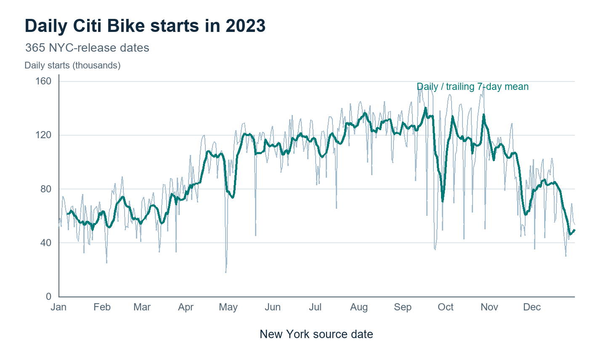
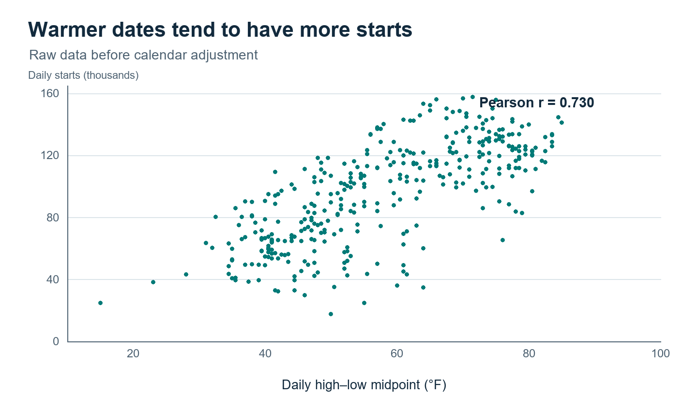
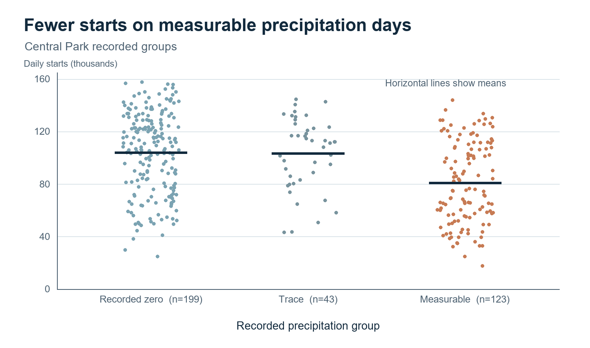
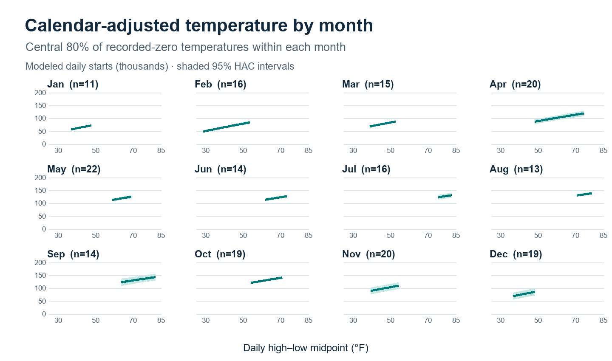
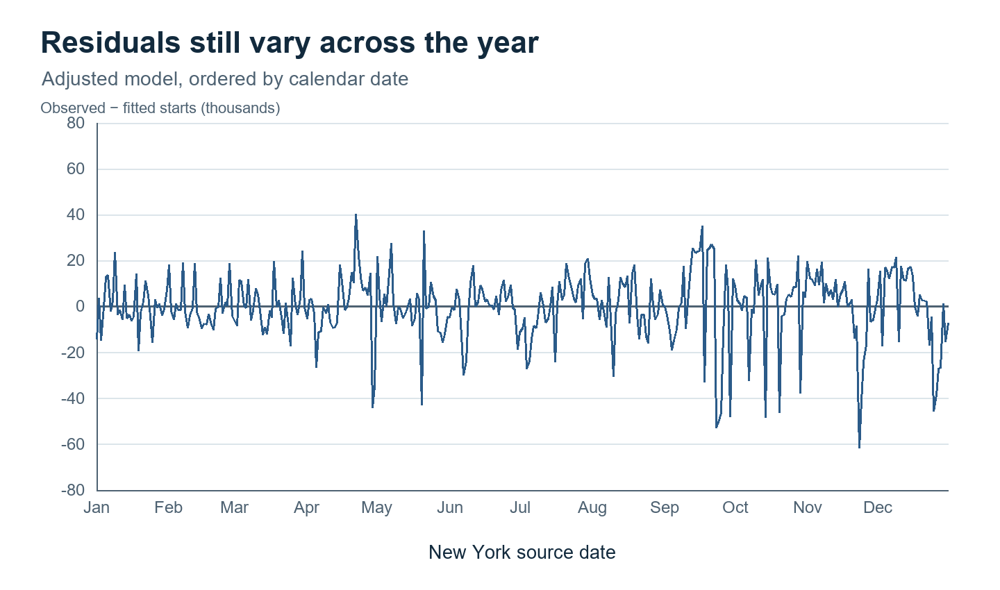
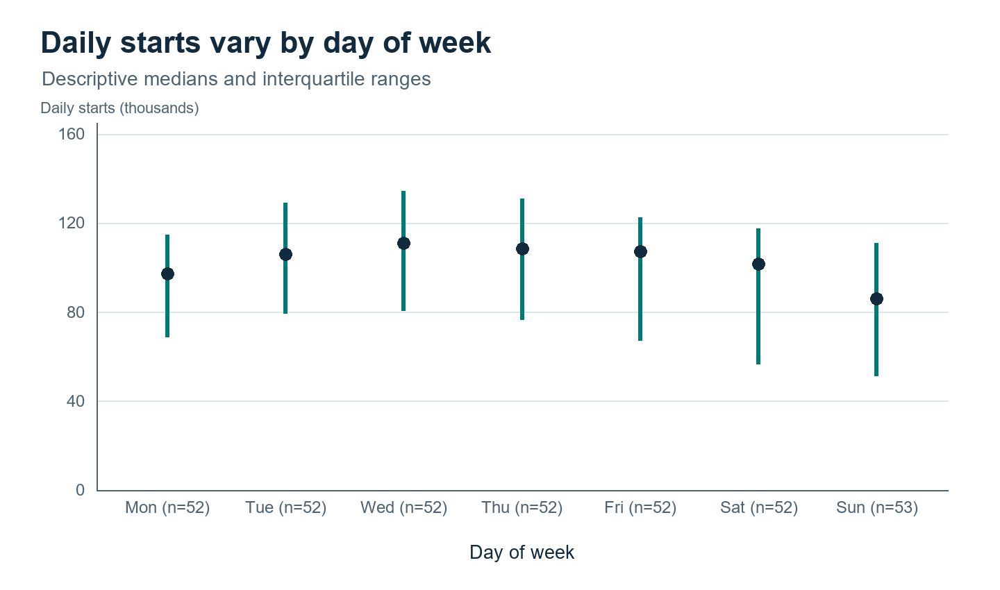
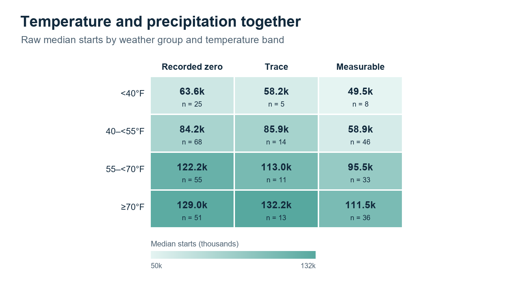
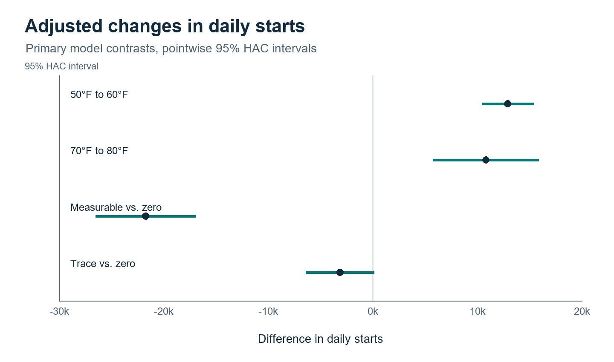

Weather and Citi Bike starts
2023 daily records · Class D Team 02
Adjusted 50°F to 60°F contrast: +12,900 starts. Measurable versus recorded-zero precipitation: -21,725 starts.

- Truthful Exact daily totals and a labeled trailing 7-day mean.
- Functional Monthly ticks and rides in thousands show variation through the year.
- Beautiful A muted daily series and thick teal mean avoid competing colors.
- Insightful Seasonal structure motivates adjustment for month and weekday.

- Truthful Every point is one date. Pearson r is a descriptive statistic.
- Functional The axes show the temperature proxy in °F and starts in thousands.
- Beautiful Small teal dots make overlap visible without obscuring the cloud.
- Insightful The upward pattern motivates an adjusted comparison.

- Truthful All 365 days and group sizes are shown, together with group means.
- Functional Recorded zero, trace and measurable days have separate labels.
- Beautiful A common scale and sparse marks keep the comparison readable.
- Insightful Trace and recorded zero look similar descriptively, while measurable days are lower.

- Truthful Each panel uses its month's observed range and shows pointwise 95% HAC intervals.
- Functional Shared axes compare the °F proxy and modeled mean starts across months.
- Beautiful Teal curves and light bands distinguish estimates from uncertainty.
- Insightful Monthly panels show where the annual model has local temperature support.

- Truthful All 365 residuals are shown relative to zero.
- Functional The time axis helps locate unusual periods and the sign of errors.
- Beautiful A thin baseline and a single data color keep attention on departures.
- Insightful Runs above and below zero motivate daily dependence checks.

- Truthful The line spans the middle 50% of dates, not a confidence interval.
- Functional Days follow calendar order and each sample size is printed.
- Beautiful A shared scale and sparse marks make groups easy to compare.
- Insightful Different day profiles motivate separate weekday controls.

- Truthful Sample sizes appear in every cell. Medians are hidden when n < 5.
- Functional A common color scale and numerical labels show the median starts.
- Beautiful Muted shading leaves room for the cell labels.
- Insightful Readers can see which combinations have limited support before interpreting the raw differences.

- Truthful All plotted intervals come from the same primary model.
- Functional The zero line separates higher from lower modeled starts.
- Beautiful The chart uses one unit and simple interval marks.
- Insightful Readers can compare magnitudes and distinguish the less precise trace result.
Sources: Citi Bike system data and NOAA Daily Summaries.
Relationships are observational. The total describes the supplied non-JC release.